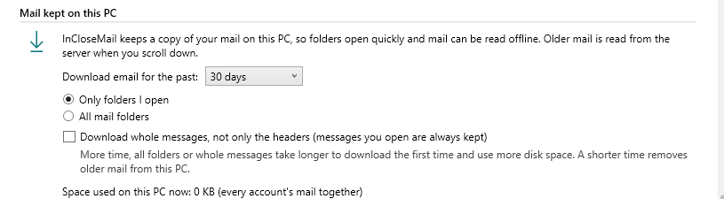
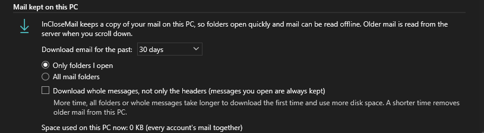
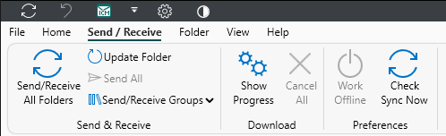
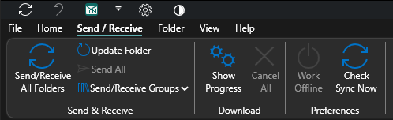

- A local copy of your mail, encrypted on your PC, readable and searchable without a connection.
- Work Offline, with changes waiting until you’re back online.




- New mail within seconds, with Outlook’s Send/Receive groups, Show Progress and Cancel All.




- Desktop Alerts with Delete and Flag, a new-mail sound, and the envelope by the clock.
- Large mailboxes kept within Exchange’s limits, so they aren’t throttled.
Missing something you used in Outlook? Choose Help → Suggest a Feature in the app. Found a bug? Help → Report a Bug sends a bug report to bugs@inclosemail.com.